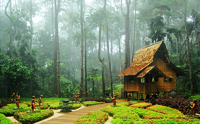

MINDANAO
1. SIARGAO ISLAND
Once a well-kept secret in surfing circles, the island of Siargao has slowly become one of the most sought-after destinations in the world. Discover why this tiny haven with world-class waves, white sand islets, turquoise tide pools, and hidden lagoons was hailed as the world’s most beautiful island back in 2018.
SURFING
Surfing in Siargao is one of the best things you can do in the Philippines.Siargao is known as the Surfing Capital of the Philippines. This small island in the southern part of the Philippines has been attracting surfers from around the world.
The high number of both small and big reef breaks that can be found in the area, including the world-class waves in Cloud 9, have earned the island recognition as one of the best surfing destinations in the world.
Generally, the peak swell season in General Luna (where Cloud 9 is) is from May to November, while it's from November to April in the municipality of Pilar, though expect some heavy rainfall at this time, as well.
While some surfers travel with their surfboards, it can be impractical if Siargao is not your only destination. A better option is to just rent a surfboard from the many schools and shops in Siargao. It's cheaper if you rent it for a longer time, so just ask around.
DIVING

Siargao Island is also shaping up to be an excellent snorkeling and diving spot. Its clear waters make for great visibility. Its marine life is rich and diverse. Its coral and rock formations are exceptional. And now more and more dive sites are being discovered.
One of the known sites, the best ones include Casulian, Pilar Twin Rocks, Shark Point, Seeco Reef and the islets fronting General Luna. The hands-down favorite, however, is the Blue Cathedral. This site boasts an underwater rock formation with a 20-meter-diameter hole on top and two deep caverns. It hosts schools of tuna, barracuda, jacks and other pelagic fish.
2. EDEN NATURE PARK (DAVAO)
Before, this was a logged-over forest that was eventually developed. Pine Trees were planted, and facilities were built. In 1997, Eden Nature Park and Resort opened and was classified as an eco-tourism zone. Not only was this resort a great place to relax, but you can also have seminars, retreats, and celebrations here. With zip lines, gardens, playgrounds, and much more, it’s one of the top places to visit in Davao.
EDEN NATURE PARK AND RESORT
In the heart of the resort is Tinubdan that lets you learn about Mindanaon culture. In this part of the park, you’ll learn traditions, beliefs, and the way of life of the Lumads or indigenous people of Mindanao.
Oddly enough, admission to the park is based on your appetite. PHP 550 (adults) / PHP 350 (kids) gives you admission with buffet lunch, while PHP 220 (adults) / PHP 190 (kids) allows you entry with a plated snack.
ZIPLINE, PLAYGROUNDS, ETC.
Before, this was a logged-over forest that was eventually developed. Pine Trees were planted, and facilities were built. In 1997, Eden Nature Park and Resort opened and was classified as an eco-tourism zone. Not only was this resort a great place to relax, but you can also have seminars, retreats, and celebrations here. With zip lines, gardens, playgrounds, and much more, it’s one of the top places to visit in Davao.
3. MALAGOS GARDEN RESORT
The Malagos Garden Resort is an agri-ecotourism destination which has welcomed travelers and families since 1994. In an effort to give you more experiences refined by nature, we have been expanding our services to greater heights.
TREE-TO-BAR EXPERIENCE

This immersive experience begins with an exploration of the Cacao Farm where guests get to meet the hardworking farmers, and have an in-depth understanding on proper methods of planting, harvesting and fermentation process. The guests then proceed to the next phase of the chocolate excursion which is a tour of the Malagos Chocolate Museum.
Through simulations and installation art inside the museum, an interactive learning experience is provided to guests as they discover the art and science behind chocolate making. The tour culminates at the Chocolate Bar where a wide selection of chocolate-filled drinks and desserts awaits. For those feeling a bit more creative, you may also head on over to the Chocolate Laboratory and have your personal take on the award-winning Malagos Chocolate with a variety of toppings and mouldings that suits all personalities.
BIRD SHOW FOR GROUPS

Originally hosted by Dr. Bo Puentespina, the Malagos Interactive Bird Show is the first and longest running full-production free flight bird show in the Philippines. His unparalleled passion for ornithology gave birth to the show, which is supported by the Malagos Wildlife Preservation Foundation. After 17 years, the show had its final run with Dr. Bo in 2019. It has since adapted a slightly different sequence, and is now being hosted by Malagos Garden Resort’s seasoned bird handlers. Featuring an all-star cast of our well-trained feathered friends, it aims to encourage environmental awareness and compassion towards animals.
The show is complete symphony of cinematic musical score and sound effects, dramatic stage design, educational script, and a showcase of talents by both birds and handlers - taking your five sensory experience to an unforgettable edutaining performance. Malagos Garden Resort demonstrates through this interactive encounter a valuable learning otherwise found only in textbooks. After the show, guests are allowed to interact and have their photos taken with the birds.